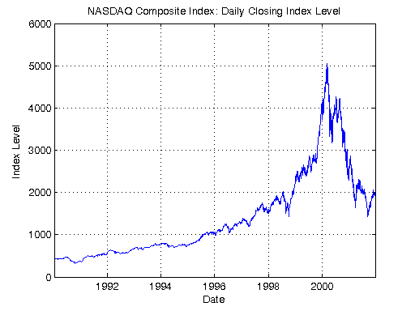
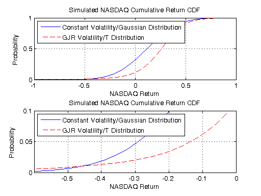

Distributed Value-at-Risk Simulation
This demo uses the Parallel Computing Toolbox™ to assess the value at risk (VaR) of the NASDAQ Composite Index over a 12-month holding period. Additionally, the demo compares the simulation-based VaR results of two models of the NASDAQ returns.
We use the Monte Carlo simulation capabilities of the Econometrics Toolbox™ to estimate the VaR of the NASDAQ index. The first model of the NASDAQ index is the most traditional, and simply assumes a constant mean, constant volatility process with conditionally Gaussian returns. The second model also assumes a constant mean, but allows for time-varying volatility by fitting the NASDAQ series to a GJR model with conditionally t-distributed returns.
For details about the value-at-risk model view the code for pctdemo_setup_garch.
Prerequisites:
Related demos:
Contents
Analyze the Sequential Problem
First, we look at how the computations in the sequential demo fit into the model introduced in the Dividing MATLAB Computations into Tasks demo. The main computations consist of a large number of simulations, where each simulation takes a fairly short amount of time. We therefore have each task perform many simulations.
We notice that in the sequential demo, we never used two of the matrices returned by garchsim, and we only used the sum of the third matrix. Following the guidelines in the Minimizing Network Traffic demo, we write a wrapper task function that returns only the data that we actually use.
Load the Demo Settings and the Data
The demo uses the default configuration when identifying the scheduler to use. The configurations documentation explains how to create new configurations and how to change the default configuration. See Customizing the Settings for the Demos in the Parallel Computing Toolbox for instructions on how to change the demo difficulty level or the number of tasks created.
[difficulty, sched, numTasks] = pctdemo_helper_getDefaults();
tasksPerModel = max(1, round(numTasks/2)); % We create tasks for 2 models.
We call the function pctdemo_setup_garch to perform all the initializations for this demo. The most important function output arguments are the time horizon, the number of simulations to perform, and both models to the NASDAQ index. The demo difficulty level determines the number of simulations we perform. You can view the code for pctdemo_setup_garch for full details.
[fig, constant, GJR, horizon, nPaths, eFit, sFit] = ...
pctdemo_setup_garch(difficulty);
startTime = clock;
 Divide the Work into Smaller Tasks
The computationally intensive part of this demo consists of a Monte Carlo simulation. We divide the nPaths simulations among the tasksPerModel tasks.
[taskSims, tasksPerModel] = pctdemo_helper_split_scalar(nPaths, ... tasksPerModel); fprintf(['This demo will submit a job with %d task(s) ' ... 'to the scheduler.\n'], 2*tasksPerModel);
This demo will submit a job with 4 task(s) to the scheduler.
Create and Submit the Job
Let us create the simulation job and the tasks in the job. We let task i perform taskSims(i) simulations. You can view the code for pctdemo_task_garch for full details.
job = createJob(sched); for i = 1:tasksPerModel createTask(job, @pctdemo_task_garch, 1, ... {constant, horizon, taskSims(i)}); end for i = 1:tasksPerModel createTask(job, @pctdemo_task_garch, 1, ... {GJR, horizon, taskSims(i), eFit, sFit}); end
We can now submit the job and wait for the simulations to complete.
submit(job);
waitForState(job, 'finished');
Retrieve the Results
Let us obtain the job results, verify that all the tasks finished successfully, and then destroy the job. We throw an error if we could not obtain any results, but display a warning if we got only some of the results.
jobResults = getAllOutputArguments(job); if isempty(jobResults) taskErrorMsgs = pctdemo_helper_getUniqueErrors(job); destroy(job); error('distcomp:demo:EmptyJobOutput', ... ['Could not obtain any job results. The following error(s) ' ... 'occurred \nduring task execution:\n\n%s'], ... taskErrorMsgs); end
The first tasksPerModel rows correspond to the constant model, while the remaining rows contain the results from the GJR model.
constResults = jobResults(1:tasksPerModel, :); GJRResults = jobResults(tasksPerModel + 1:2*tasksPerModel, :);
Combine all the results based on each model into one long vector.
constantCumReturns = cat(2, constResults{:});
GJRCumReturns = cat(2, GJRResults{:});
Verify that all the tasks finished successfully.
numConstResults = numel(constantCumReturns); numGJRResults = numel(GJRCumReturns); if ~(numConstResults == nPaths && numGJRResults == nPaths) taskErrorMsgs = pctdemo_helper_getUniqueErrors(job); warning('distcomp:demo:IncompleteJobResults', ... ['Some tasks did not finish. Results were obtained for ' ... '%d out of %d \nsimulations using the constant model ' ... 'and %d out of %d simulations using \nthe GJR model. ' ... 'The following error(s) ' ... 'occurred during task execution:\n\n%s'], ... numConstResults, nPaths, numGJRResults, nPaths, taskErrorMsgs); end
We have now finished all the verifications, so we can destroy the job.
destroy(job);
Measure the Elapsed Time
The time used for the distributed computations should be compared against the time it takes to perform the same set of calculations in the Sequential Value-at-Risk Simulation demo. The elapsed time varies with the underlying hardware and network infrastructure.
elapsedTime = etime(clock, startTime);
fprintf('Elapsed time is %2.1f seconds\n', elapsedTime);
Elapsed time is 13.9 seconds
Plot the Results
The first plot illustrates the entire cumulative distribution function. The second plot highlights the lower tail of the distributions, corresponding to portfolio losses, and allows us to compare the predicted value at risk at the high confidence levels, that is at low levels of probability. You can view the code for pctdemo_plot_garch for full details.
pctdemo_plot_garch(fig, constantCumReturns, GJRCumReturns);